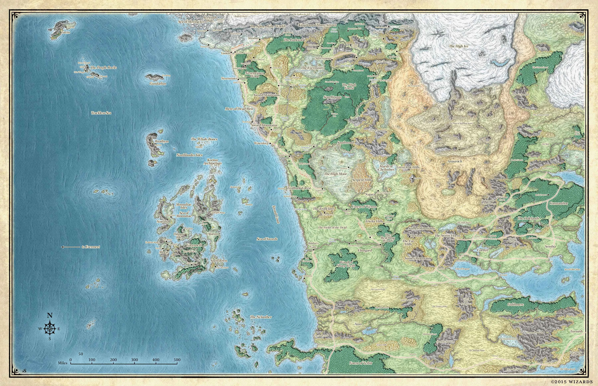
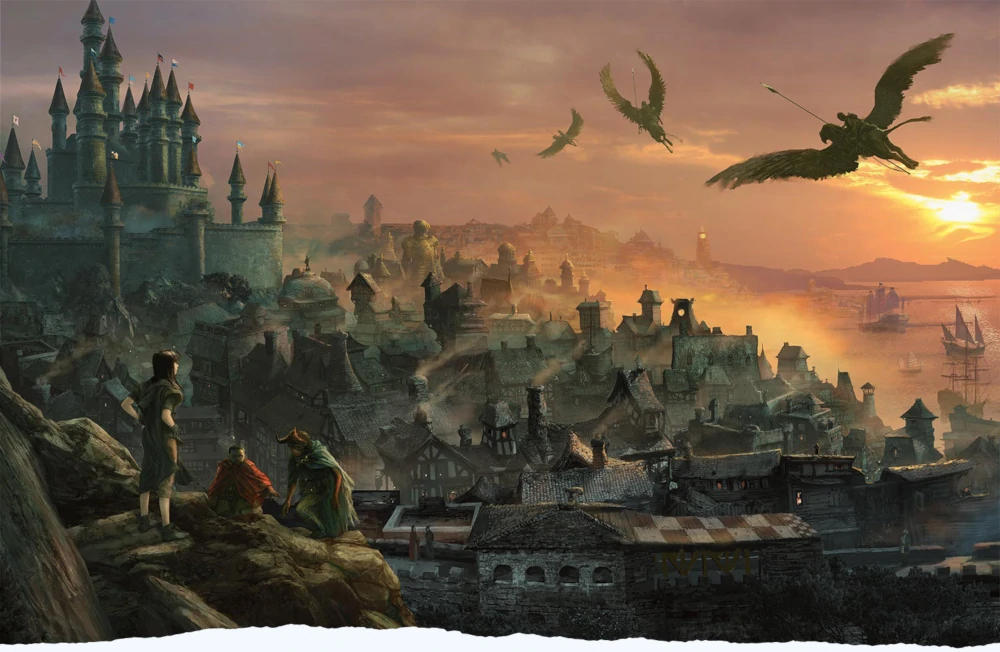
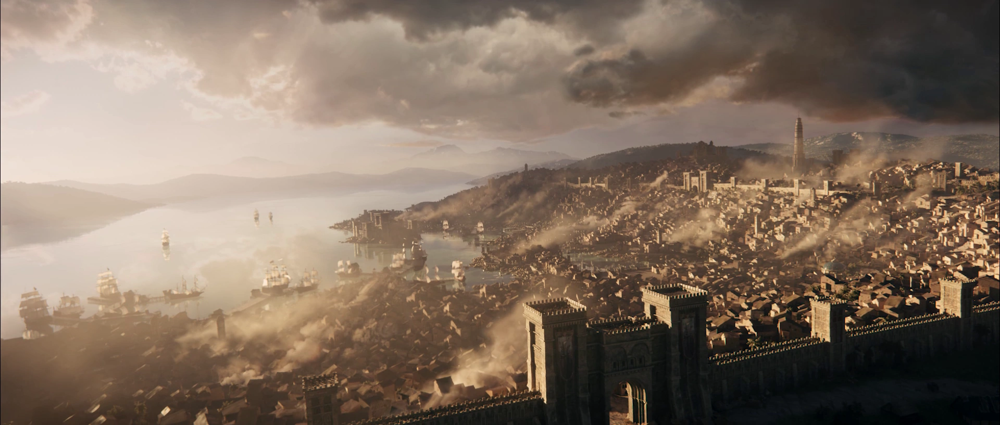
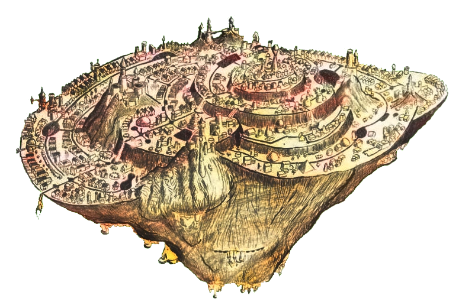

Waterdeep is the biggest city on the Swordcoast, it's population is varied, because it is a prominent port city.

Baldur's Gate is located to the south of the great city-state of Waterdeep, north of Amn along the well-traveled Coast Way road,
that passed over the Wyrm's Crossing, through the Outer City and into the Gate proper. It was nestled on a stretch of poor soil, within
a natural bay that formed
on the north bank of the River Chionthar about 40 miles (64.4 km) east from its mouth on the Sea of Swords.

Anauroch, or The Great Sand Sea, is a magical desert in northern Faerûn.
It held the remnants of the once-powerful Netherese Empire, their flying enclaves having crashed to the ground
when their greatest mage Karsus, in a desperate bid to end the war against the phaerimm, challenged the goddess
Mystryl for her divine mantle, causing the Weave to falter and all magic to fail.